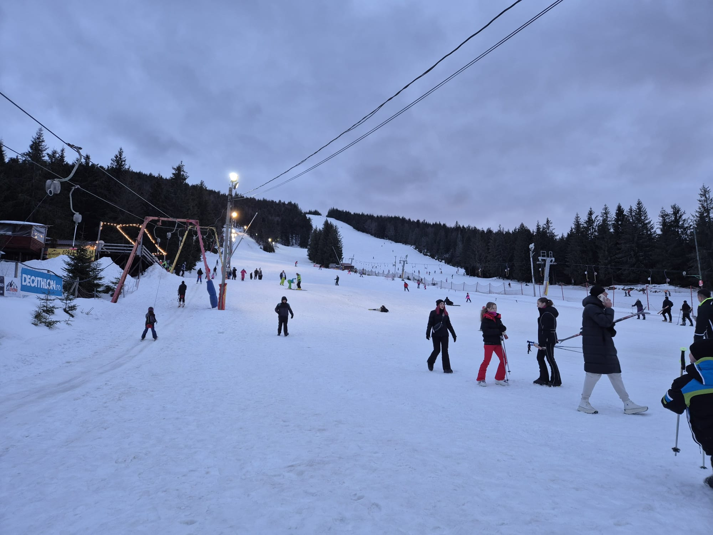
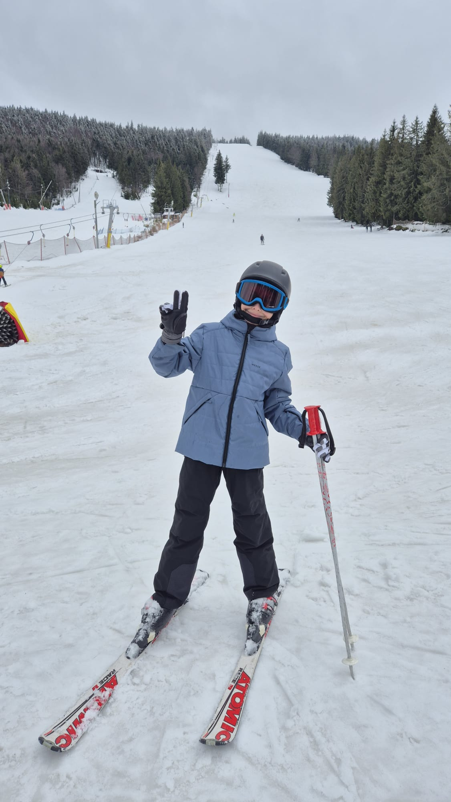

Mikaela Shiffrin este una dintre cele mai cunoscute schioare din lume și una dintre cele mai talentate sportive din istoria schiului alpin. Ea a câștigat foarte multe concursuri internaționale și numeroase medalii importante. Mikaela este apreciată pentru viteza, echilibrul și tehnica sa extraordinară pe pârtie. Mulți copii și tineri care practică schiul o consideră un model și o sursă de inspirație.
Marcel Hirscher este un fost mare campion austriac la schi alpin. El a dominat ani la rând competițiile mondiale și a câștigat multe trofee importante. Marcel era renumit pentru controlul excelent pe schiuri și pentru modul spectaculos în care cobora pârtiile dificile. După retragere, el a rămas una dintre cele mai respectate persoane din lumea schiului.
Lindsey Vonn este una dintre cele mai faimoase persoane din istoria schiului alpin. Ea a câștigat numeroase competiții internaționale și medalii olimpice datorită vitezei și tehnicii sale impresionante. De-a lungul carierei, Lindsey Vonn a devenit un simbol al curajului și al ambiției în sporturile de iarnă. Performanțele sale au inspirat milioane de oameni din întreaga lume să descopere pasiunea pentru schi.
